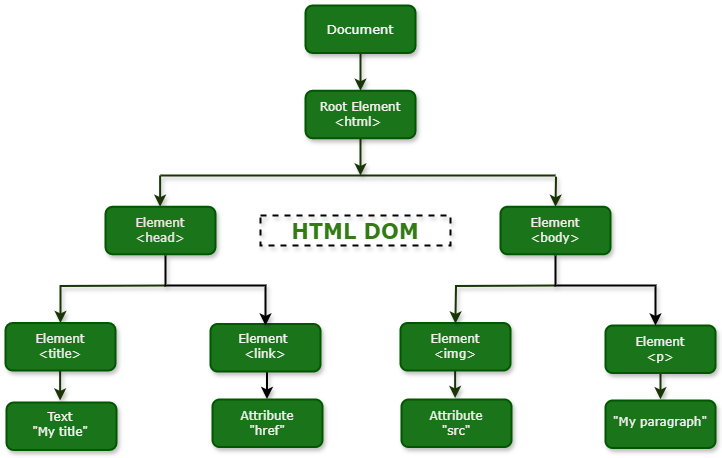

DOM Manipulation in JavaScript
First of all, DOM stands for Document Object Model and it a programming interface for web documents. It represents the structure of HTML or XML documents as a tree of objects, where each part of the document (elements, attributes, text, etc.) is a node. This structure allows programming languages, primarily JavaScript, to dynamically access, modify, add, or remove elements and content of a web page after it has loaded.
Key Concepts of DOM Manipulation:
- Document: Refers to the entire web page loaded in the browser.
- Object: Each HTML element (like <body>, <div>, <h1>, etc.) is treated as a JavaScript object with its own properties and methods.
- Model: Represents the hierarchical, tree-like structure of the document, showing the parent-child relationships between different nodes.
What is DOM Tree?
The structural representation created by the DOM is very much like a tree. The browser uses the DOM tree representation it builds from an HTML document to determine what to render on a web page. For example, a visual representation of a DOM tree will look like this:
The DOM organizes the entire document into a logical tree that illustrates the relationships between different parts of the page, much like a family tree with parents, children, and siblings.
- Root Node: At the very top of the hierarchy is the Document node, which represents the entire web page and serves as the entry point for all other nodes.
- Parent and Child Nodes: Nodes directly contained within another node are its children. The containing node is the parent. For example, the <body> element is a child of the <html> element, and the <html> element is the parent of both <head> and <body>.
- Sibling Nodes: Nodes that share the same parent are called siblings. For example, the <head> and <body> elements are siblings.
The primary purpose of the DOM tree is to provide a programmatic interface (API) that allows scripts, particularly JavaScript, to interact with the web page. By treating the document structure as a collection of objects, JavaScript can:
- Navigate the tree (traverse relationships between nodes).
- Access specific nodes to read their properties.
- Modify the content, structure, and styles of nodes dynamically.
- Add or remove nodes in real-time in response to user actions or other events.
This functionality is what enables interactive and dynamic web experiences without requiring a full page reload.
DOM Manipulation
DOM manipulation refers to the process of using a scripting language, primarily JavaScript, to interact with and modify the Document Object Model (DOM) of a web page. The DOM is a programming interface for HTML and XML documents, representing the page's structure as a tree of objects (nodes).
Key aspects of DOM manipulation:
- Accessing Elements: Selecting specific elements within the HTML document using methods like getElementById(), getElementsByClassName(), getElementsByTagName(), querySelector(), and querySelectorAll().
- Modifying Content: Changing the text content of elements using properties like textContent or innerHTML.
- Changing Attributes: Modifying or adding attributes to elements using methods like setAttribute() and removeAttribute().
- Styling Elements: Dynamically changing the visual appearance of elements by manipulating their style property or adding/removing CSS classes.
- Creating and Removing Elements: Adding new HTML elements to the page or removing existing ones using methods like createElement(), appendChild(), removeChild(), or remove().
- Event Handling: Attaching event listeners to elements to make them interactive and respond to user actions (e.g., clicks, hovers, key presses) or system events.
Purpose of DOM Manipulation
DOM manipulation is fundamental to creating dynamic and interactive web pages. It allows developers to:
- Update content without requiring a full page reload.
- Create interactive user interfaces and respond to user input.
- Add or remove elements based on application logic or user actions.
- Change the styling of elements dynamically.
- Build complex web applications with rich user experiences.
Conclusion
In summary, the Document Object Model (DOM) serves as the essential programming interface for web documents , structuring HTML or XML pages as a navigable tree of objects.
DOM manipulation is the indispensable process, primarily using JavaScript , to dynamically interact with and modify this structure. Mastering this skill involves techniques for accessing elements , modifying content and attributes , applying styles , managing elements (creation and removal) , and implementing event handling.
Ultimately, DOM manipulation is the foundation for creating dynamic, responsive, and interactive web pages , allowing developers to update content without a full reload and build the rich user experiences expected in modern web applications.
Thank you for reading and have a wonderful rest of your day. 👋